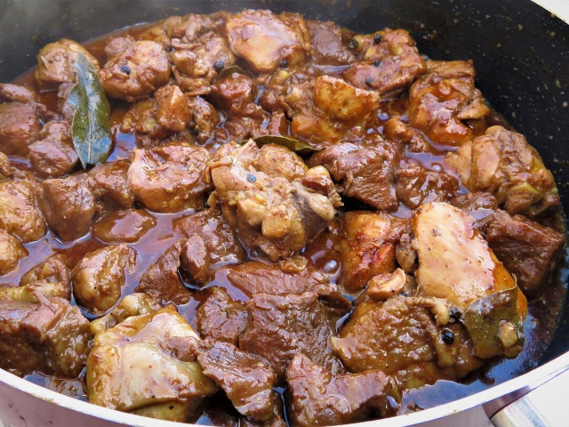

Chicken Pork Adobo

One of the best love dishes of Filipinos all over the world.
Ingredients
- 1 1/2 lbs pork belly chopped
- 1 1/2 lbs chicken cut into serving pieces
- 4 pieces dried bay leaves
- 2 teaspoons whole peppercorn
- 1 head garlic slightly crushed
- 6 tablespoons vinegar white
- 1/2 cup soy sauce
- 1 tablespoon oyster sauce
- 2 teaspoons brown sugar
- 2 cups water
- Salt to taste
- 3 tablespoons cooking oil
Steps
- Heat oil in a pan
- Once the oil becomes hot, add the garlic. Cook until the color turns golden brown.
- Remove the garlic and set aside. Add pork and chicken. Cook for 5 minutes or until the color turns light brown.
- Add whole peppercorn, bay leaves, oyster sauce, soy sauce, and water. Let boil and simmer until the meat gets tender.
- Add the sugar and stir.
- Pour-in vinegar and let boil.Simmer until most of the liquid evaporates.
- Add salt to taste. Put-in the fried garlic, stir, and cook for 2 minutes.
- Serve. Share and enjoy!